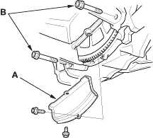
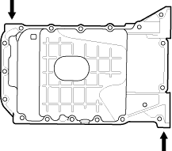

- If the engine is still in the vehicle, remove the sub-frame.
- Drain the engine oil (see page 8-5).
- Attach the chain hoist to the engine (see step 33 on page 5-7).
- Disconnect the suspension lower arm ball joints (see step 10 on page 18-5).
- Remove the rear mount mounting bolts (see step 37 on page 5-8).
- Remove the front mount mounting bolt (see step 38 on page 5-8).
- Use a marker to make alignment marks on the reference lines that align with the centres of the rear sub-frame mounting bolts. Remove the front sub-frame (see step 39 on page 5-9).
- Remove the clutch cover (A), and remove the two bolts (B) securing the transmission.

- Remove the bolts/nuts securing the oil pan.

- Insert a flat tip screwdriver where shown, and separate the oil pan from the block.

- Remove the oil pan.